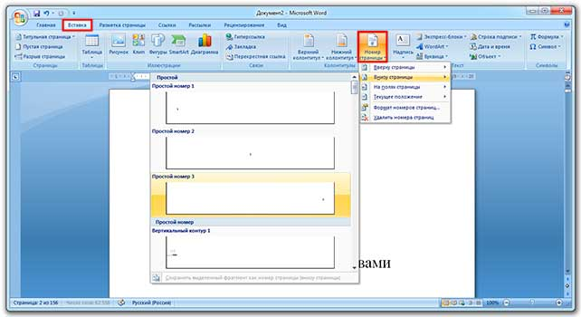

Оглавление в Microsoft Word
В этом уроке я покажу, как сделать оглавление в Ворде. Создать его можно автоматически: просто выбрать мышкой нужные разделы и подразделы.
Инструкция подходит для любой версии программы Microsoft Word: 2003, 2007, 2010, 2013, 2016, 2019.
Как сделать оглавление в Ворде – пошаговая инструкция
1. Сначала нужно пронумеровать страницы документа. Для этого переходим во вкладку «Вставка» в верхней части программы, щелкаем по кнопке «Номер страницы» и выбираем подходящий вариант. Затем нажимаем «Закрыть окно колонтитулов».
2. Теперь необходимо разметить разделы в документе. Для этого выделяем названия и применяем для них нужный стиль.
Сначала в тексте выделяем заголовок главного раздела и в части «Стили» выбираем «Заголовок 1» (обычно это третий пункт слева).
Затем выделяем каждый из дополнительных разделов (подразделов) и выбираем в стилях пункт «Заголовок 2».
То же самое проделываем и с остальными разделами и подразделами. Если есть еще и под-подразделы, то выбираем для каждого из них стиль Заголовок 3 и 4 соответственно.
3. Ставим курсор в то место документа, куда нужно вставить содержание.
Например, я хочу, чтобы оно было в самом начале текста, перед первым разделом. Значит, щелкаю перед первой его буквой левой кнопкой мышки, чтобы там начала мигать палочка.
4. Переходим во вкладку «Ссылки» в верхней части программы. Нажимаем на кнопку «Оглавление» и выбираем «Автособираемое оглавление 1» или «Автособираемое оглавление 2».
Вот и всё! Содержание добавилось туда, где мигал курсор. Выглядит оно примерно так же, как в любой книге или журнале.
Благодаря ему можно быстро перейти в определенный раздел. Для этого зажать клавишу Ctrl на клавиатуре и щелкнуть мышкой по нужному пункту.
На заметку. Если нужно вынести содержание на отдельную страницу (например, на титульный лист), ставим курсор перед разделом, переходим во вкладку «Вставка» и нажимаем на кнопку «Разрыв страницы».
Изменение оформления
Само оформление (шрифт, размер, цвет и др.) меняется вручную. А вот структурные изменения (вложенность, разделитель и другие параметры) редактировать нужно через вкладку «Ссылки» в верхней части Ворда: Ссылки → Оглавление → Оглавление...
Например, вместо точек можно выбрать пунктир, сплошное подчеркивание или вообще убрать разделитель.
Когда мы размечаем разделы и подразделы текста при создании содержания, оформление заголовков автоматически меняется. Шрифт и размер букв, цвет, выравнивание становятся другими.
Были у меня, например, черные заголовки шрифта Arial, а стали синие Cambria.
Конечно, это можно поправить вручную: пройтись по тексту и поменять оформление на нужное. Но есть вариант проще – отредактировать сами стили.
Для этого щелкаем правой кнопкой мышки по стилю, который нужно поправить, и выбираем пункт «Изменить».
В появившемся окошке настраиваем форматирование: меняем шрифт, размер, цвет и другие характеристики, после чего нажимаем ОК.
Сразу после этого все заголовки данного уровня, которые есть в документе, поменяются. То же самое проделываем и со стилями других уровней.
Как обновить
В процессе работы над документом его частенько приходится править: добавлять или удалять информацию, менять заголовки. Что в этом случае делать с содержанием?
Всё просто: его нужно обновить. Делается это автоматически – нужно просто нажать на кнопку «Обновить таблицу» во вкладке «Ссылки».
После этого все, что вы наменяли в тексте, отразится на содержании: исправятся названия пунктов, обновятся ссылки и номера страниц.
ККак удалить
Удалять содержание нужно не как обычный текст, а через панель инструментов:
Ссылки → Оглавление → Удалить оглавление